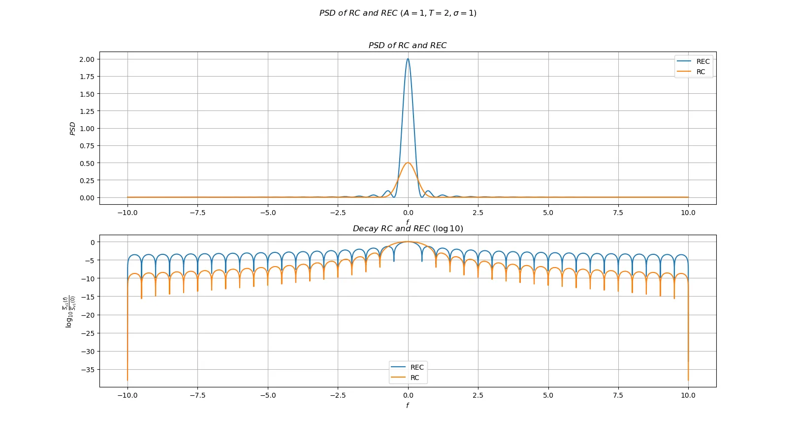
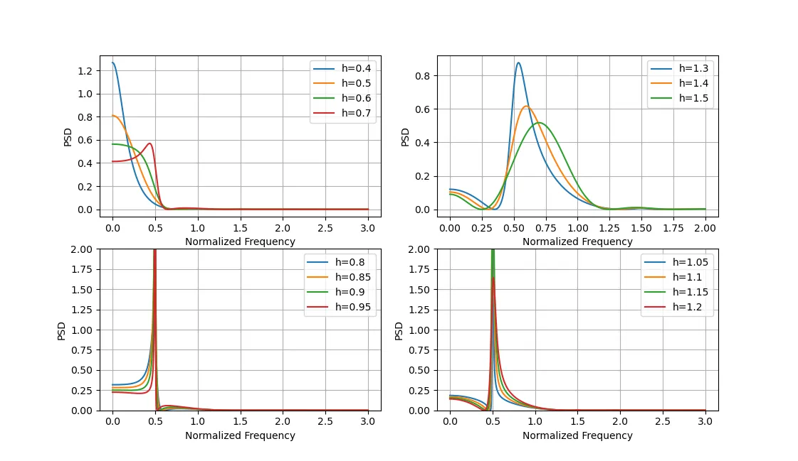
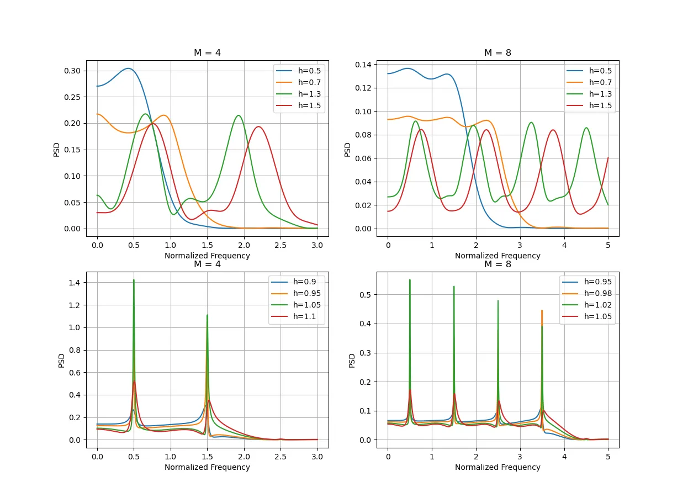
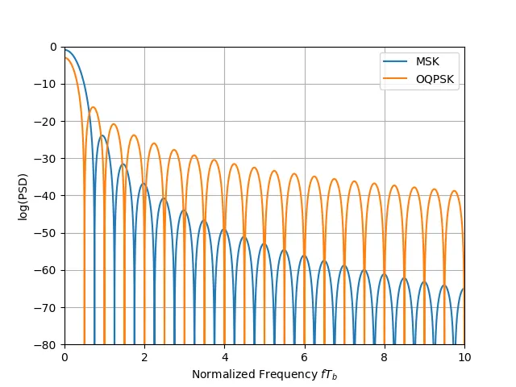

对于调制信号，我们可以通过其功率谱（PSD）来研究其频谱特性。因为无线电频谱是有限且十分珍贵的资源，一个调制信号的 PSD 能够反应其频谱占用情况，是研究信号特性的重要工具。
# 随机过程
随机过程是通信系统中的一个基础概念，也是通信系统中的一个基础概念。
一个随机过程X(t) 是一组依赖于变量t 的随机变量。定义随机过程X(t) 的均值mX(t) 和自相关函数RX(t1,t2)
mX(t)=E[X(t)]RX(t1,t2)=E[X(t1)X∗(t2)]
两个随机过程X(t) 和Y(t) 的互相关函数
RXY(t1,t2)=E[X(t1)Y∗(t2)]
如果RX(t1,t2)=RX∗(t1,t2) 那么这个过程是 Hermitian 对称的，互相关函数定义类似。
如果一个随机过程X(t) 的均值是一个常数，RX(t1,t2)=RX(τ)，τ=t1−t2，这个过程就是广义平稳过程（WSS）。WSS 随机过程的功率谱密度是描述了其功率关于频率分布的函数SX(f)。Wiener-Khinchin 定理说明了，WSS 过程的功率谱是自相关函数RX(τ) 的 Fourier 变换：
SX(f)=F[RX(τ)]
如果随机过程X(t) 的均值和自相关函数都是以T0 周期的周期函数，那么这个随机过程是一个循环平稳（Cyclostationary）过程。循环平稳过程满足：
mX(t+T0)=mX(t)RX(t1+T0,t2+T0)=RX(t1,t2)
对于循环平稳过程，其平均自相关函数是其在一个周期内的自相关函数的平均值：
RX(t)T01∫0T0RX(t+τ,t)dt
循环平稳随机过程的平均功率谱密度为平均自相关函数的 Fourier 变换：
SX(f)=F[RX(t)]
# 一般信号的功率谱
我们写一个一般情况下的低通信号：
v1(t)=n=−∞∑∞s(t−nT;In)
那么这个信号的数学期望是
E[vk(t)]=n=−∞∑∞E[In]g(t−nT)=μIn=−∞∑∞g(t−nT)=E[v1(t+T)]
这个信号的自相关函数
Rv1(t1,t2)=E[v1(t1)v1∗(t2)]=n=−∞∑∞m=−∞∑∞E[InIm∗]g(t1−nT)g∗(t2−mT)=Rv1(t1+T,t2+T)
上面的数学期望和自相关函数说明了这个信号是一个循环平稳过程。因此，我们可以通过平均自相关函数的 Fourier 变换来计算其功率谱密度：
==k=n−m=u=t−mT=Rv1(t)T1∫0Tn=−∞∑∞m=−∞∑∞RI(n−m)g(t+τ−nT)g∗(t+τ−mT)dτT1k=−∞∑∞RI(k)m=−∞∑∞∫0Tg(t+τ−kT−mT)g∗(t−mT)dtT1k=−∞∑∞RI(k)m=−∞∑∞∫−mT−(m−1)Tg(u+τ−kT)g∗(u)duT1k=−∞∑∞RI(k)∫−∞∞g(u+τ−kT)g∗(u)du
令
gm(τ)=RI(m)∫−∞∞g(u+τ)g∗(u)du
带入得到
=Rv1(t)T1k=−∞∑∞gm(τ−kT)
这部分式子依旧是十分复杂的，难以进行计算。然而，我们观察gm(τ)，应该能够发现这个函数的形式类似卷积。考虑到卷积的性质，这个函数在频域上的表达式应该会比较清晰。
我们将gm(τ) 移到频域上，得到：
====v=u+t==Gm(f)∫−∞∞gm(τ)e−j2πfτdτ∫−∞∞(RI(m)∫−∞∞g(u+τ)g∗(u)du)e−j2πfτdτRI(m)∫−∞∞(∫−∞∞g(u+τ)e−j2πfτdτ)g∗(u)duRI(m)∫−∞∞(∫−∞∞g(v)e−j2πfvdv)g∗(u)duRI(m)∫−∞∞g(v)e−j2πfvdv∫−∞∞g∗(u)e−j2πfuduRI(m)∣G(f)∣2
这样子，对上面自相关函数进行 Fourier 变换，并且带入这里的Gm(f)，我们就得到了这个信号的功率谱密度函数：
====Sv1(f)F{Rv1(t)}T1k=−∞∑∞F{gk(t−kT)}T1k=−∞∑∞RI(m)∣G(f)∣2e−2πkfTT1SI(f)∣G(f)∣2
其中
SI(f)=k=−∞∑∞RI(k)e−j2πkfT
这样子，我们就得到了数字通信的功率谱的一般表达式。这个表达式说明了两个因素决定了功率谱的形状，一个是信息序列的自相关函数，另一个是 pulse shaping function 的频谱。
# 互不相关的信息序列下的功率谱
考虑输入一个互不相关的信息序列，其自相关函数为
RI(k)={μI2+σI2μI2,k=0,k=0
那么
SI(f)=σI2+μI2l=−∞∑∞e−j2πfkT
根据 Poisson 求和公式：
k=−∞∑∞e−j2πfkT=T1−∞∑∞δ(f−Tk)
带入SI(f)
SI(f)=σI2+TμI2k=−∞∑∞δ(f−Tk)
带入到Sv1(f) 中，我们得到：
Sv1(f)=continuousTσI2∣G(F)∣2+discreteTμI2k=−∞∑∞δ(f−Tk)∣G(f)∣2
也就是这样的一个信号的功率谱分为了连续和离散的两个部分，如果信息序列的数学期望为 0，那么这个信号的功率谱就没有离散的部分，功率谱的形状完全由脉冲整形函数决定。在实际的使用中，我们一般是希望有尽可能少的冲激函数部分，因此我们都会尽可能希望信息序列的数学期望为 0。
# 使用方波的情况
如果我们使用方波作为g(t)，即
g(t)=A[u−1−u−1(t−T)]
其 Fourier 变换为
G(F)=ATsinc(fT)e−jπfT
那么其功率谱为
==Sv1(f)TσI2∣G(f)∣2+TμI2k=−∞∑∞δ(f−Tk)∣G(f)∣2σI2A2Tsinc2(fT)+μI2A2δ(f)
我们知道sinc(x) 函数有一个特殊的性质，对于x=±1,±2,...，sinc(x) 的值为 0，这样就使得在μI=0 的情况下，信号的功率谱也就只会在f=0 处有一个高度为μI2A2 的冲激函数。
# 使用升余弦函数的情况
如果我们使用升余弦函数作为g(t)，即
g(t)=2A[1+cos(T2π(t−2T))](u−1(t)−u−1(t−T))
其 Fourier 变换为
G(f)=2ATsinc(fT)1−f2T21e−jπfT
带入其功率谱，得到
Sv1(f)=4(1−f2T2)2σI2A2Tsinc2(fT)+4μI2A2δ(f)+16μI2A2δ(f−T1)+16μI2A2δ(f+T1)
这里注意其中一步化简需要用到一个常用的极限：
x→±1lim(1−x2)2sinc2(x)=41
如果从Sv1(f) 来看的话，使用 RC 函数的功率谱关于f 的衰减为1/f6，而使用了方波的情况为1/f2，这也就意味着使用 RC 函数的情况下，信号的能量更加集中。
我们绘制两种情况下的功率谱图：

可以看到 RC 的旁瓣更大，但是衰减速度更快，能量更加集中在中心频率上。一般来说，脉冲整形函数的波形越平滑（能够连续微分的阶数更高），其功率谱衰减更快。
当然，尽管 RC 的性能是优于方波的，但是其实现成本更高，这也需要进行取舍。
# 相互关联的信息序列的功率谱
考虑一个特殊的情况，信息序列为In=bn+bn+1，其中bn 为互不相关，均值为 0，方差为 1 的信息序列。此时In 的自相关函数：
RI(k)=⎩⎨⎧210,k=0,k=1,otherwise
此时信息序列的功率谱为：
SI(f)=2+Bj2πfT+e−j2πfT=4cos2(πfT)
这样频谱的宽度更窄，同时衰减速度也变快。
# CPFSK 和 CPM 的功率谱
CPM 信号的功率谱推导过程和前面的稍有区别，我们考虑独立同分布的信息序列I，CPM 信号表示为
v1(t)=ejϕ(t;I)
其中
ϕ(t;I)=2πhk=−∞∑∞Ikq(t−kT)
我们计算其自相关函数
======Rv1(t1,t2)E[v1(t1)v1∗(t2)]E[ejϕ(t1;I)e−jϕ(t2;I)]E[exp(j2πhk=−∞∑∞Ik[q(t1−kT)−q(t2−kT)])]E[k=−∞∏∞exp(j2πhIk[q(t1−kT)−q(t2−kT)])]k=−∞∏∞E[exp(j2πhIk[q(t1−kT)−q(t2−kT)])]k=−∞∏∞[n∈S∑Pnexp(j2πhn[q(t1−kT)−q(t2−kT)])]
这里记所有可能取值的码字Ik=n∈S，其中Ik=n 的概率为Pn。上述步骤中一些转换需要利用到独立同分布的性质。
接下来，我们计算周期内的平均自相关函数：
==Rv1(τ)T1∫0TRv1(t+τ,t)dtT1∫0Tk=−∞∏∞[n∈S∑Pnexp(j2πhn[q(t+τ−kT)−q(t−kT)])]dt
这个很不好，包含了积分连乘和累加，同时连乘还是无限多项的。但是我们注意到，如果指数中的j2πhn[q(t+τ−kT)−q(t−kT)])=0，那么这一部分累乘中间的部分就是∑n∈SPne0=1，这部分就不用参加累乘计算了。
我们那么就需要来考量一下这个部分的特性。
前面一节提到了 phase shaping function q(t) 的性质，这一部分在t<0 时值为 0，在t>LT 时值为1/2。
我们设置一个整数m，满足mT≤τ=ξ+mT<(m+1)T，ξ∈[0,1)。
这样子对于q(t−kT) 和q(t+τ−kT)，t∈[0,T)，在k<min{1−L,m+1−L} 时，两个取值都是 0，在k>max{0,m+1} 时，两个取值都是1/2，这两段区间上两个函数相减，指数均为 0，可以不用讨论。
那么平均自相关函数就变成了：
==Rv1(τ)T1∫0Tk=min{m+1−L,1−L}∏max{m+1,0}[n∈S∑Pnej2πhn[q(t+τ−kT)−q(t−kT)]]dtT1∫0Tk=1−L∏m+1[n∈S∑Pnej2πhn[q(t+τ−kT)−q(t−kT)]dt
接下来把平均自相关函数进行 Fourier 变换，得到功率谱密度。这里补充一点，这里的平均自相关函数满足 Hermitian 对称性，所以
Rv1(−τ)=Rv1∗(τ)
进行 Fourier 变换：
=====Sv1(f)∫−∞∞Rv1(τ)e−j2πfτdτ∫−∞0Rv1(τ)e−j2πfτdτ+∫0∞Rv1(τ)e−j2πfτdτ∫0∞Rv1(−τ)ej2πfτdτ+∫0∞Rv1(τ)e−j2πfτdτ∫0∞(Rv1(τ)e−j2πfτ)∗dτ+∫0∞Rv1(τ)e−j2πfτdτ2Re{∫0∞Rv1(τ)e−j2πfτdτ}
这里面的∫0∞Rv1(τ)e−j2πfτdτ 展开，这一部分中，我们注意到，如果m≥L，对于q(t−kT) 和q(t+τ−kT)，t∈[0,T)，m+1−L>0，此时两个 phase shaping function 变化段没有重叠！
==∫0∞Rv1(τ)e−j2πfτdτ∫0LTRv1(τ)e−j2πfτdτ+∫LT∞Rv1(τ)e−j2πfτdτ∫0LTRv1(τ)e−j2πfτdτ+m=L∑∞∫mT(m+1)TRv1(τ)e−j2πfτdτ
这时候前面一项范围有限，但是后面一项还有无穷级数，不过上面说了，对于m≥L 的情况，两个 phase shaping function 变化段没有重叠，因此：
==Rv1(τ)T1∫0Tk=1−L∏m+1[n∈S∑Pnej2πhn[q(t+τ−kT)−q(t−kT)]]dtT1([k=1−L∏0Pnej2πhn[q(t+τ−kT)−q(t−kT)]]×[k=1∏m−LPnej2πhn[q(t+τ−kT)−q(t−kT)]]×[k=M−L+1∏m+1Pnej2πhn[q(t+τ−kT)−q(t−kT)]])
这里将连乘中的项分为了三个部分，这三个部分分别对应了q(t−kT) 和q(t+τ−kT) 各自的变化段和中间的不变段，因此我们得到：
=Rv1(τ)(m≥L)T1([k=1−L∏0Pnej2πhn[21−q(t−kT)]]×[k=1∏m−LPnej2πhn[21−0]]×[k=M−L+1∏m+1Pnej2πhn[q(t+τ−kT)−0]])
令
ϕI(h)=n∈S∑Pnejπhn
称为特征函数，则有：
==Rv1(τ)(m≥L)T1∫0T(k=1−L∏0[n∈S∑Pnej2πhn[21−q(t−kT)]][ϕI(h)]m−L)[k′=1−L∏1[n∈S∑Pnej2πhn[q(t+τ−k′T−mT)]]]dt[ϕI(h)]m−Lλ(τ−mT)
这里λ(ξ) 定义为：
λ(ξ)=T1∫0T(k=1−L∏0[n∈S∑Pnej2πhn[21−q(t−kT)]]k′=1−L∏1[h∈S∑Pnej2πhnq(t+ξ−k′T)])dt
继续带入前面的∫0∞Rv1(τ)e−j2πfτdτ，得到
====∫0∞Rv1(τ)e−j2πfτdτm=L∑∞∫mT(m+1)T[ϕI(h)]m−Lλ(τ−mT)e−j2πfτdτm=L∑∞∫0T[ϕI(h)]m−Lλ(ξ)e−j2πf(ξ+mT)dξ,(ξ=τ−mT)(m=L∑∞ϕI(h)m−L)（∫0Tλ(ξ)e−j2πfξdξ)⎩⎨⎧1−ϕI(h)e−j2πfTe−jπfLT∫0Tλ(ξ)e−j2πfξdξ,(e−j2πfLT∑m′=0∞e−j2πT(f−v/T)m′)(∫0∞λ(ξ)e−j2πfξdξ),∣ϕI(h)∣<1∣ϕI(h)∣=∣ej2πv∣=1
这边蓝色部分是一个复数的等比数列，我们能够套用求和公式。不过这里有个问题，公比可以是 1，这就不好办了。在这种情况下，我们令
ϕI(h)=ej2πv
下面来看一下这个等比数列特殊情况下的求和。前面提到了 Poisson 求和公式，我们这里也要用到。现在考虑一个单位阶跃函数：
u−1(t)=⎩⎨⎧1,21,0,t>0t=0t<0
其 Fourier 变换为
U−1(f)=21(δ(f)−jπf1)
我们通过间隔Ts 无限冲激序列对这个函数进行采样，利用冲激函数的性质：
===U−1,δ(f)n=−∞∑∞u−1(nTs)e−j2πnTsf21+n=1∑∞e−j2πnTsf−21+n=0∑∞e−j2πnTsf
而套用 Poisson 求和公式，我们得到：
==U−1,δ(f)Ts1n=−∞∑∞U−1(f−Tsn)2Ts1n=−∞∑∞(δ(f−Tsn−jπ(f−Tsn)1))
联立两式，我们得到
m′=0∑∞e−j2πT(f−v/T)m′=21+2T1m′=−∞∑∞(δ(f−Tv+m′)−jπ(f−Tv+m′)1)
这样，我们能够解决前面等比数列求和的问题了：
==∫0∞Rv1(τ)e−j2πfτdτ⎩⎨⎧1−ϕI(h)e−j2πfTe−jπfLT∫0Tλ(ξ)e−j2πfξdξ,(e−j2πfLT∑m′=0∞e−j2πT(f−v/T)m′)(∫0∞λ(ξ)e−j2πfξdξ),∣ϕI(h)∣<1∣ϕI(h)∣=∣ej2πv∣=1⎩⎨⎧1−ϕI(h)e−j2πfTe−jπfLT∫0Tλ(ξ)e−j2πfξdξ,e−j2πfLT(21+2T1∑m′=−∞∞(δ(f−Tv+m′)−jπ(f−Tv+m′)1))(∫0∞λ(ξ)e−j2πfξdξ),∣ϕI(h)∣<1∣ϕI(h)∣=∣ej2πv∣=1
现在，对于∣ϕI(h)∣<1 的情况，我们可以计算：
Sv1(f)=2Re{∫0LTRv1(τ)e−j2πfτdτ+1−ϕI(h)e−j2πfT1(∫0Tλ(ξ)e−j2πf(ξ+LT)dξ)}
其中对于0≤τ=ξ+mT≤LT
Rv1(τ)=T1∫0Tk=1−L∏m+1[n∈S∑Pnej2πhn[q(t+τ−kT)−q(t−kT)]]dt
而在∣ϕI(h)∣=1 时，在fm′=Tv+m′ 出存在冲激函数。
而如果∣ϕI(h)∣<1，在符号等概率的情况下：
Pn=M1
特征函数
ϕI(h)=M1n=−(M−1)∑M−1ejπhn=M1sinπhsinMπh
简化平均自相关函数
Rv1(τ)=2T1∫0Tk=1−L∏τ/TM1sin(2πh[q(t+τ−kT)−q(t−kT)])sin(2πhM[q(t+τ−kT)−q(t−kT)])dt
相应的功率谱密度
Sv1(f)=2[∫0LTRv1(τ)cos(2πfτ)dτ+1+ϕ12(h)−2ϕI(h)cos(2πfT)1−ϕI(h)cos(2πfT)∫LT(L+1)TRv1(τ)cos(2πfτ)dτ−1+ϕ12(h)−2ϕI(h)sin(2πfT)1−ϕI(h)sin(2πfT)∫LT(L+1)TRv1(τ)sin(2πfτ)dτ]
说实话上面这个公式真套进去跑数值计算也非常费劲…… 两层积分套在一起实在没办法搞……
# CFPSK 的 PSD
如果考虑到使用方波的情况，线性的q(t) 会让整个式子变得比较好看。这里直接拿书上的公式：
Sv(f)=T[M1n=1∑MAn2(f)+M22n=1∑Mm=1∑MBnm(f)An(f)Am(f)]An(f)=π[fT−21(2n−1−M)h]sinπ[fT−21(2n−1−M)h]Bnm(f)=1+ϕI2(h)−2ϕIcos(2πfT)cos(2πfT−αnm)−ϕI(h)cosαnmαnm=πh(m+n−1−M)
对于M=2 的情况，我们可以得到：

可以注意到，当h 趋近于 1 时，PSD 中出现了尖峰。在h 小于 1 时，能量主要集中在频谱中心部分，随着h 逐渐趋向于 1，频谱有向外产生一个尖峰的趋势。对于h 大于 1 的情况，PSD 能量主要集中在外侧一般区域中，随着h 逐渐趋向于 1，频谱有向内的趋势。
为了尽可能减少频谱占用，一般我们还是要把调制指数设置在1 以内。当然，在一些特殊的情况下，也许可以通过大于 1 的调制指数来达到一些特殊的效果。
对于M 更高的情况，有类似的：

绘制M=4 和M=8，和前面的情况类似。
下面考虑一些特殊情况，我们绘制 MSK 和 OQPSK 的功率谱，能够得到：

可见 MSK 的旁瓣功率下降远快于 OQPSK。
# 附 - 绘图代码
使用RC和REC的PSD和衰减速度
| import matplotlib.pyplot as plt |
| import numpy as np |
| |
| |
| def sinc(x): |
| if x == 0: |
| return 1 |
| return np.sin(np.pi * x) / (np.pi * x) |
| |
| def s_rec(sigma, A, T, f): |
| return pow(sigma, 2) * pow(A, 2) * T * pow(sinc(f * T), 2) |
| |
| def s_rc(sigma, A, T, f): |
| return pow(sigma, 2) * pow(A, 2) * T * pow(sinc(f * T), 2) / (4 * pow((1 - pow(f, 2) * pow(T, 2)),2)) |
| |
| |
| sigma = 1 |
| T = 2 |
| A = 1 |
| x = np.linspace(-10, 10, 10000) |
| y1 = [] |
| y2 = [] |
| y1_0 = s_rec(sigma, 1, T, 0) |
| y2_0 = s_rc(sigma, 1, T, 0) |
| for i in x: |
| y1.append(s_rec(sigma, 1, T, i)) |
| y2.append(s_rc(sigma, 1, T, i)) |
| |
| y1 = np.array(y1) |
| y2 = np.array(y2) |
| |
| plt.suptitle("$PSD\ of\ RC\ and\ REC\ (A=1, T=2, \sigma=1)$") |
| ax = plt.subplot(211) |
| ax.set_title("$PSD\ of\ RC\ and\ REC$") |
| plt.plot(x, y1, label="REC") |
| plt.plot(x, y2, label="RC") |
| plt.legend() |
| plt.grid(True) |
| ax.set_xlabel("$f$") |
| ax.set_ylabel("$PSD$") |
| |
| ax = plt.subplot(212) |
| ax.set_title("$Decay\ RC\ and\ REC\ (\log 10)$") |
| plt.plot(x, np.log10(y1 / y1_0), label="REC") |
| plt.plot(x, np.log10(y2 / y2_0), label="RC") |
| plt.legend() |
| plt.grid(True) |
| ax.set_xlabel("$f$") |
| ax.set_ylabel("$\\log_{10}\\frac{\\overline{S}_{v1}(f)}{\\overline{S}_{v1}(0)}$") |
| |
| plt.show() |
M-CPM的PSD谱
| import matplotlib.pyplot as plt |
| import numpy as np |
| |
| |
| def phi_h(h, M): |
| return np.sin(M * h * np.pi) / np.sin(h * np.pi) / M |
| |
| |
| def alpha(n, m, M, h): |
| return np.pi * (m + n - 1 - M) * h |
| |
| |
| def A(n, f, T, M, h): |
| return (np.sin(np.pi * (f * T - 0.5 * (2 * n - 1 - M) * h))) / ( |
| np.pi * (f * T - 0.5 * (2 * n - 1 - M) * h) |
| ) |
| |
| |
| def B(n, m, f, T, M, h): |
| return ( |
| np.cos(2 * np.pi * f * T - alpha(n, m, M, h)) - phi_h(h, M) * np.cos(alpha(n, m, M, h)) |
| ) / ( |
| 1 |
| + pow(phi_h(h, M), 2) |
| - 2 * phi_h(h, M) * np.cos(2 * np.pi * f * T) |
| ) |
| |
| def s_v(f, T, M, h): |
| sum_a = 0 |
| sum_ab = 0 |
| for n in range(1, M + 1): |
| sum_a += pow(A(n, f, T, M, h), 2) |
| for m in range(1, M + 1): |
| sum_ab += A(n, f, T, M, h) * B(n, m, f, T, M, h) * A(m, f, T, M, h) |
| return (sum_a / M + sum_ab * 2 / pow(M, 2)) * T |
| |
| |
| T = 0.5 |
| M = 2 |
| |
| ax = plt.subplot(221) |
| |
| |
| for h in [0.5, 0.7, 1.3, 1.5]: |
| x = np.linspace(0, 3, 10000) |
| y = s_v(x / T, T, 4, h) |
| |
| |
| plt.plot(x, y, label="h={}".format(h)) |
| ax.set_title("M = 4") |
| plt.legend() |
| plt.grid(True) |
| plt.xlabel("Normalized Frequency") |
| plt.ylabel("PSD") |
| |
| ax = plt.subplot(222) |
| |
| |
| for h in [0.5, 0.7, 1.3, 1.5]: |
| x = np.linspace(0, 5, 10000) |
| y = s_v(x / T, T, 8, h) |
| |
| |
| plt.plot(x, y, label="h={}".format(h)) |
| ax.set_title("M = 8") |
| plt.legend() |
| plt.grid(True) |
| plt.xlabel("Normalized Frequency") |
| plt.ylabel("PSD") |
| |
| ax = plt.subplot(223) |
| |
| |
| for h in [0.9, 0.95, 1.05, 1.1]: |
| x = np.linspace(0, 3, 10000) |
| y = s_v(x / T, T, 4, h) |
| |
| |
| plt.plot(x, y, label="h={}".format(h)) |
| ax.set_title("M = 4") |
| plt.legend() |
| plt.grid(True) |
| plt.xlabel("Normalized Frequency") |
| plt.ylabel("PSD") |
| |
| ax = plt.subplot(224) |
| |
| |
| for h in [0.95, 0.98, 1.02, 1.05]: |
| x = np.linspace(0, 5, 10000) |
| y = s_v(x / T, T, 8, h) |
| |
| |
| plt.plot(x, y, label="h={}".format(h)) |
| ax.set_title("M = 8") |
| plt.legend() |
| plt.grid(True) |
| plt.xlabel("Normalized Frequency") |
| plt.ylabel("PSD") |
| |
| |
| plt.show() |
MSK和OQPSK的比较
| import matplotlib.pyplot as plt |
| import numpy as np |
| |
| |
| def s_v_msk(f, A, T): |
| return (16 * pow(A, 2) * T / pow(np.pi, 2)) * pow( |
| np.cos(2 * np.pi * f * T) / (1 - 16 * pow(f * T, 2)), 2 |
| ) |
| |
| def s_v_oqpsk(f, A, T):j |
| return pow(A, 2) * T * pow(np.sin(np.pi * f * T) / (np.pi * f * T), 2) |
| |
| A = 1 |
| T = 0.5 |
| x = np.linspace(0, 10, 10000) |
| y1 = s_v_msk(x / T, A, T) |
| y2 = s_v_oqpsk(x / (T / 2), A, T) |
| |
| plt.plot(x, 10 * np.log10(y1), label="MSK") |
| plt.plot(x, 10 * np.log10(y2), label="OQPSK") |
| plt.legend() |
| plt.grid(True) |
| plt.xlabel("Normalized Frequency $fT_b$") |
| plt.ylabel("log(PSD)") |
| plt.xlim(0, 10) |
| plt.ylim(-80, 0) |
| plt.show() |